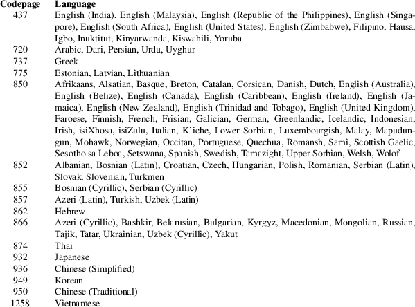

fatlabel − set or get MS-DOS filesystem label or volume ID
fatlabel [OPTIONS] DEVICE [NEW]
fatlabel will display or change the volume label or volume ID on the MS-DOS filesystem located on DEVICE. By default it works in label mode. It can be switched to volume ID mode with the option −i or −−volume−id.
If NEW is omitted, then the existing label or volume ID is written to the standard output. A label can’t be longer than 11 bytes and should be in all upper case for best compatibility. An empty string or a label consisting only of white space is not allowed. A volume ID must be given as a hexadecimal number (no leading "0x" or similar) and must fit into 32 bits.
−i, −−volume−id
Switch to volume ID mode.
−r, −−reset
Remove label in label mode or generate new ID in volume ID mode.
-c PAGE, −−codepage=PAGE
Use DOS codepage PAGE to encode/decode label. By default codepage 850 is used.
−h, −−help
Display a help message and terminate.
−V, −−version
Show version number and terminate.
For historic reasons FAT label is stored in two different locations: in the boot sector and as a special volume label entry in the root directory. MS-DOS 5.00, MS-DOS 6.22, MS-DOS 7.10, Windows 98, Windows XP and also Windows 10 read FAT label only from the root directory. Absence of the volume label in the root directory is interpreted as empty or none label, even if boot sector contains some valid label.
When Windows XP or Windows 10 system changes a FAT label it stores it only in the root directory — letting boot sector unchanged. Which leads to problems when a label is removed on Windows. Old label is still stored in the boot sector but is removed from the root directory.
dosfslabel prior to the version 3.0.7 operated only with FAT labels stored in the boot sector, completely ignoring a volume label in the root directory.
dosfslabel in versions 3.0.7–3.0.15 reads FAT labels from the root directory and in case of absence, it fallbacks to a label stored in the boot sector. Change operation resulted in updating a label in the boot sector and sometimes also in the root directory due to the bug. That bug was fixed in dosfslabel version 3.0.16 and since this version dosfslabel updates label in both location.
Since version 4.2, fatlabel reads a FAT label only from the root directory (like MS-DOS and Windows systems), but changes a FAT label in both locations. In version 4.2 was fixed handling of empty labels and labels which starts with a byte 0xE5. Also in this version was added support for non-ASCII labels according to the specified DOS codepage and were added checks if a new label is valid.
It is strongly suggested to not use dosfslabel prior to version 3.0.16.
MS-DOS and Windows systems use DOS (OEM) codepage for encoding and decoding FAT label. In Windows systems DOS codepage is global for all running applications and cannot be configured explicitly. It is set implicitly by option Language for non-Unicode programs available in Regional and Language Options via Control Panel. Default DOS codepage for fatlabel is 850. See following mapping table between DOS codepage and Language for non-Unicode programs:

fsck.fat(8), mkfs.fat(8)
The home for the dosfstools project is its GitHub project page.
dosfstools were written by Werner Almesberger, Roman Hodek, and others. Current maintainers are Andreas Bombe and Pali Rohár.